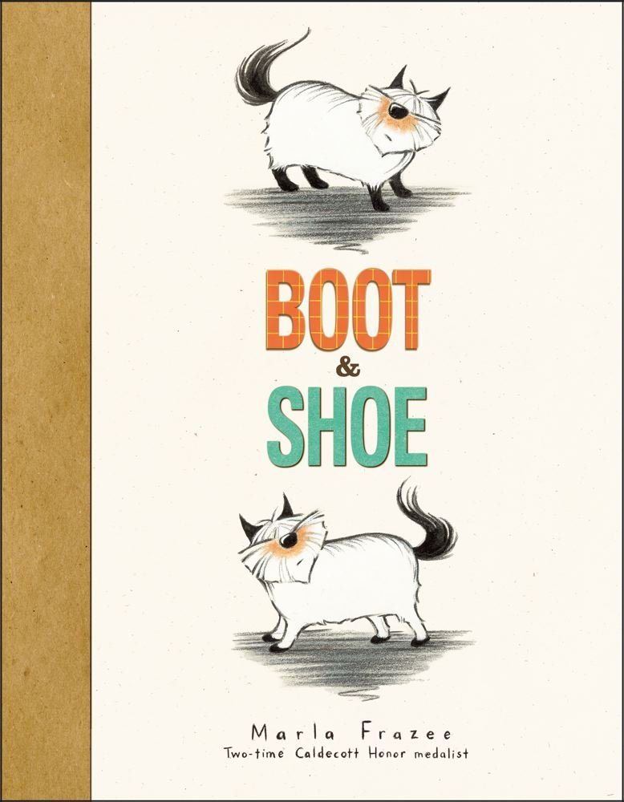
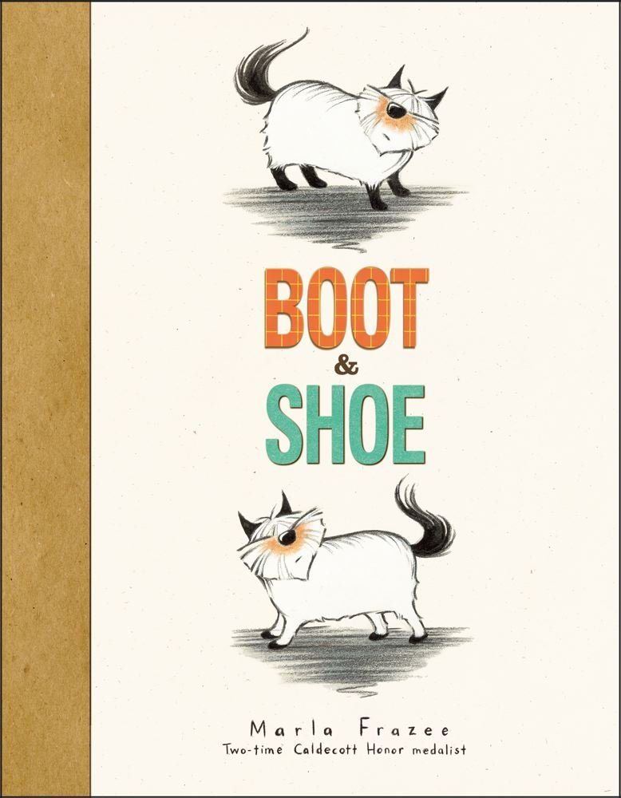
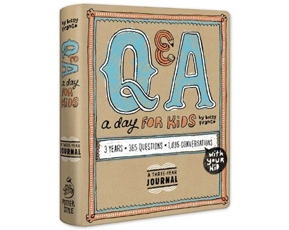
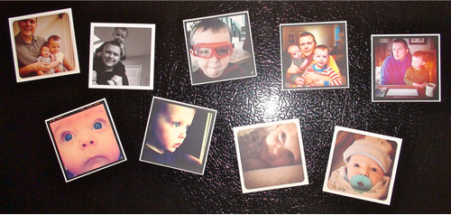

This is my most favorite book I’m reading the boys lately. I love these little dogs so much and it’s such a sweet little story.
Boot & Shoe by Marla Frazee, Amazon


This is my most favorite book I’m reading the boys lately. I love these little dogs so much and it’s such a sweet little story.
Boot & Shoe by Marla Frazee, Amazon

We are big time kids books readers over here. Books before nap time, books before bedtime and in between. We are always on the hunt for good books. Just for reference I have a 4 year old and a not quite 2 year old. The 2 year old LOVES LOVES the Pete the Cat books with a passion. Literally he sees those books and squeals in delight.
Pete the Cat and His Four Groovy Buttons
Press Here My friend Kristina introduced me to this one and it’s just SO FUN because it’s very interactive.
This Moose Belongs to Me Anything Oliver Jeffers is a hit in our house, we have all of his books.
Dragons Love Tacos
Lemonade in Winter: A Book About Two Kids Counting Money This is fantastic for teaching about money.
Those Darn Squirrels!
Goldilocks and the Three Dinosaurs: As Retold by Mo Willems Mo Willems of Don’t Let the Pigeon..and Knuffle Bunny fame (of which we highly recommend all of those as well)
Spoon
Pete the Cat: I Love My White Shoes

If you are in possession of a small child of the speaking variety, this book may be of interest to you or him/her. At some point your child starts asking why this and why that. This book will assist you. Trust me. This book gives you answers to such things as Why do we have a belly button? Why do balloons float? Why do some people wear glasses?
Go forth and learn all the things.
National Geographic Little Kids First Big Book of Why

I got two of these journals last week or so and I’m LOVING them. Basically it prompts you with a question to ask your child and you write down their response. It provides one question for every day of the year and has a spot for the next three years to record answers. We leave it on our kitchen table and ask our 4 year old the day’s question at breakfast or dinner or whenever we remember. So far it’s been very fun!! Let me give you an example of one of the responses I got yesterday:
Question/Prompt: I felt awful when_____
Answer: It was Sunday and I broke up with Taylor Swift.
(Don’t worry, they have since gotten back to together and have plans to marry)
This where I insert my excuse for going MIA for a number of months 🙂 Life happens, right? But this is a great post that’s always fun to do and lets me verbal vomit about my life in the last year. So here goes it….
1. What did you do in 2011 that you’d never done before?
Entered and completed a 10k and lived to write about it. HAHAA.
2. Did you keep your new year’s resolutions, and will you make more for next year?
I would say that I didn’t technically meet my resolution of losing the amount of weight that I wanted, but IÂ am pumped for the new year.
3. Did anyone close to you give birth?
OMG did they ever. Sarah and AK both in one year. It’s been a lot of baby talk round these parts.
4. Did anyone close to you die?
Yes, I had a cousin pass in July. Very sad situation that really rattled my family. Unfortunately my Aunt also died just last month while in the hospital under going heart surgery. You just have to buckle down as a family and push through the good and the bad. There was more bad this year than I would have liked.
5. What countries did you visit?
JAMAICA BABY. Ben’s sis got married in Montego Bay and we were able to have a really badass vacation there in turn. Snorkling was my favorite activity there.
6. What would you like to have in 2012 that you didn’t have in 2011?
A siamese cat that magically gets over his little man, I hate every other cat in the house so I am going to piss in a pile of clothes act.
7. What dates from 2011 will be etched upon your memory, and why?
Unfortunately my cousins death on July 27, 2011. We were very close for a number of years and again, just took the whole thing pretty hard. It was a very senseless situation.
I hate that the one thing that sticks out in my mind is a really bad event, but its what I think of first.
8. What was your biggest achievement of this year?
This isn’t entirely complete because the school is not over, but….volunteering to be and acting as homeroom mom. With that comes organization of all class parties and field day. It’s also given me more time with Austin at a time when he is really starting to naturally become more independent.  So far is been a lot of fun and I’ve been able to be front row for all of Austin’s activities at school.
9. What was your biggest failure?
I don’t have anything that I look back and said that I completely failed on. There are times I have acted in ways that I shouldn’t have though.
10. Did you suffer illness or injury?
If sick is being defined as an illness or injury that actually had you down, I do not believe I was sick one single time in 2011. Tipsy ladies, feel free to correct me if I am wrong.
11. What was the best thing you bought?
A new TV for our bedroom. I had thought before that I really didn’t care about TVs, until I got a nice upgraded one to watch my Law and Orders on.
12. Whose behavior merited celebration?
Ben was great with all the deaths and goings on this year. You know simple things like just sitting with someone at the hospital or in a funeral service make the world of difference. You know that you have someone there that is giving you 100% of their support.
Another person that has totally blown me away is my dear friend Der. Its been pretty amazing watching her take a natural gift and be able to turn into a career that makes everyone of her customers so happy. Shes truly got something good going there.
13. Whose behavior made you appalled and depressed?
Blah.
14. Where did most your money go?
Its honestly felt like Austin ate, literally ate in food, my paycheck. What little was left went to Austin’s first football season. What a great experience and GREAT people watching. Soccer was nothing compared to these characters.
15. What did you get really, really, really excited about?
I did/am totally wrapped up in the excitement of watching my best friends with their babies. Its been a lot of fun to see all tha’ boys and its also fun that we are all boy moms now, some of us for the second time. Its a very special club.
16. What song will always remind you of 2011?
“What Sarah Said” by Death Cab for Cutie
17. Compared to this time last year, are you: a) happier or sadder? b) thinner or fatter? c) richer or poorer?
Happier still. It’s still been a fun year and I have the best people in my life.
Actually if you get down to technicalities, I am thinner–but not by much!
Same.
18. What do you wish you’d done more of?
Traveling. Its so nice to get out and see new places and experience new things. I want to do more of that in 2012.
19. What do you wish you’d done less of?
Worrying about things I can’t change.
20. How did you spend Christmas?
In Houston with my family and Ben’s family. Christmas Eve is at my parents place with all of my Mom’s side of the family. Its a fun and extremely loud and obnoxious gathering. One of my Aunts threatened to “slap the shit” out of another one of my Aunts this year, so that’s always a good laugh.
21. Did you fall in love with 2011?
I think in any relationship you continue to get closer and closer when its going good. So I would definitely say with Ben. CHEESE BALL!
22. What was your favorite TV program?
DUDE….I seriously have an issue. All I watch is Law and Order on DVDs. Now that I have been through all of the Law and Order: SVUs, I have moved on to the orignal Law and Orders. I am seriously an addict.
23. Do you hate anyone now that you didn’t hate this time last year?
No.
24. What was the best book you read?
Absolutely fell head over heels for the Hunger Games Trilogy.
25. What was your greatest musical discovery?
Sarah Jaffe. Actually Ben discovered her for me and took me to a concert. She’s amazing and a REALLY chill.
26. What did you want and get?
You know I decided to look for a job in January of 2011 and in less than a month I landed a job that I absolutely love. I think that was my best catch this year.
27. What did you want and not get?
Nothing I can even think of.
28. What was your favorite film of 2010?
I am going to go with….Limitless. It had me tuned in from the second it started.
29. What did you do on your birthday, and how old were you?
On my 31st birthday Ben took me to a concert and then surprised me with a bunch of my friends that were already at a bar waiting for me to ring in the big 3-1. I really felt like it was “my day”.
30. What one thing would have made your year immeasurably more satisfying?
I think a TAD more organization would have helped. I don’ think I am in immense need, but I started off the new year by organizaing all of my jewelry. My next battle is my closet. So I have high hopes to get more organized. 🙂
31. How would you describe your personal fashion concept of 2010?
Patterns and bangles. I did a lot of thrift shopping this year as well.
32. What kept you sane?
The good and bad and up and downs of raising and being as involved as I can with Austin. Its been work for Ben and I together as well. Its definitely a learning process that never stops.
33. What political issue stirred you the most?
When that TV reporter had some type of seizure or something and was talking all crazy. That stirred me real good. Google it. Thank me later.
34. Who did you miss?
I miss working my old co-workers, they were a really fun crew. They have all also moved on to other jobs since then as well. Its just so important to have people that make you laugh, you can talk to and rely on at work. I spend more time at work than anywhere else, so that kind of thing is important to me.
35. Who was the best new person you met?
On Austin’s football team there are twin boys (age 10) that we have gotten to know during this year. I have to say they are so damn cool and have a way of making you look at things in a totally different perspective. They have two of the sweetest personalities and couldn’t have a better outlook on things, considering that haven’t had the best home life.
36. Tell us a valuable life lesson you learned in 2011.
That you really should try to make the best of each relationship, day, conversation.
37. Quote a song lyric that sums up your year.
Love is watching someone die.— Death Cab for Cutie

I went on a hunt for some new fleece hats on Etsy and ran across this adorable shop: mrs ptb makes all things awesome. She has some ADORABLE hats for girls and boys. Â These are just a few of the ones that I found, go check out the shop for more!

I love Carter’s for the basics and they have some cute stuff for my little chunk of a 4 month old right now. Â I have a slight obsession with baby socks so I’ll go ahead and admit that those have been purchased.
My oldest son will be 3 in October and his current obsession is Cars 2. He knows what country the racers are from, what their numbers are, where the 3 races in the World Grand Prix take place, etc etc. So, we play with cars every. single. day. Â Keeping that in mind I’ve been trying to come up something for his birthday. Â I’ve got 3 different things in mind that are potential winners.
So tell me other moms of car obsessed children, what do I need?

I’m definitely a PJ fanatic. It all started with my with my almost 3 year old and it picked up speed with my 4 month old. Â I’ve got to say that my absolute favorite PJs are from Hanna Andersson so you can obviously see why I’d be a fan of Serena & Lily’s newest PJs where they partnered with Hanna Andersson….totally adorable. Â I’m also a long time fan of Hatley footed PJs too. Â Hatley has a bunch of these footie ones on sale. Â The best thing about all of these is that they zip up. Â No fumbling with snaps late at night!

So by now you should know that all of us Tipsy gals use the instagram app. Â If you haven’t heard of instagram, please come out of the hole you have been living in. Â What you may not have heard of is StickyGram. StickyGram turns your instagram pictures into magnets. Â Super fun! I ordered some of my favorites for our fridge. Â Not only do I love to see them everyday but my kiddos love to see themselves also!!



Recent Comments